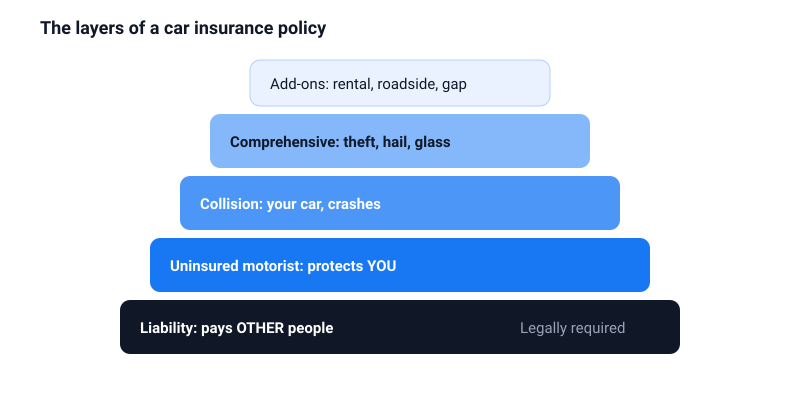
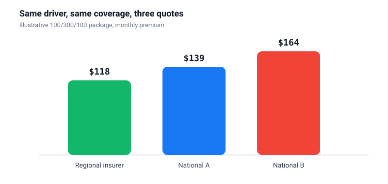
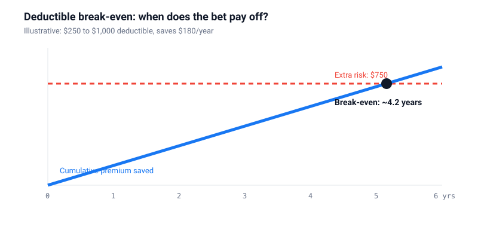

Best Car Insurance Companies: why the cheapest quote often costs you most
Two drivers. Same car. Same ZIP code. Quotes that can be hundreds of dollars apart.
That gap is not random. It comes from how each insurer prices your profile, which coverage is actually in the quote, discounts nobody mentioned and renewal prices that creep up quietly.
This guide gives you a simple system: lock the coverage first, check claims quality second, and only then compare price. Once you see it, every quote becomes readable.
Why price should be the last thing you compare
Car insurance rates depend on a long list of things: your state, age, driving record, vehicle, mileage, claims history and, in many states, a credit-based insurance score.
Every insurer weighs those factors differently. That is why one company can be cheap for you and expensive for your neighbour.
The bigger problem is that quotes are often not comparable. A cheap quote with minimum liability and a pricier one with strong limits and full protection are different products. Comparing them on price alone is like comparing a bike and a car because both have wheels.
Coverage, layer by layer
Think of a policy as a stack. The base is required by law. Each layer above protects something else.

Liability: protects other people
Liability pays for injuries and damage you cause. It is written as three numbers, like 100/300/100. That means up to $100,000 per injured person, $300,000 per accident and $100,000 of property damage.
State minimums are much lower. They keep you legal. They do not necessarily keep you safe, because anything above your limit can become your personal responsibility.
Collision and comprehensive: protect your car
Collision covers crash damage to your car. Comprehensive covers almost everything else: theft, hail, flood, fire, glass and animal strikes. Both come with a deductible.
Uninsured motorist: protects you from others
If someone hits you and has no insurance, or not enough, this layer steps in. It is one of the best-value coverages on most policies.
| Coverage | Pays for | Priority |
|---|---|---|
| Bodily injury liability | Injuries you cause to others | Never skimp |
| Property damage liability | Cars and property you damage | Never skimp |
| Uninsured motorist | You, when the other driver cannot pay | High value |
| Collision | Your car after a crash | Depends on car value |
| Comprehensive | Theft, weather, glass, animals | Depends on car value |
| Rental, roadside, gap | Extras after a claim | Nice to have |
The three-quote method
This is the core of the guide. Follow the steps in order.
- Freeze the package. Write down your liability limits, deductibles, uninsured motorist limits and any add-ons. Do not change them while shopping.
- Collect three to five quotes. Mix national insurers, a regional insurer and an independent agent who can quote several companies at once.
- Check quality. Look up complaint data through your state insurance department or the NAIC, and check financial strength ratings.
- Ask about every discount by name. Many are not applied automatically.
- Ask for the renewal price. Some insurers win you with a low first year and recover it later.

The deductible decision, with math
A higher deductible lowers your premium. But it is a bet: you save a little every year in exchange for paying more if you ever claim.
Here is how to see if the bet makes sense:

Simple rule: only choose a deductible you could pay from savings tomorrow without stress.
Discounts worth asking about
Discounts can move the price a lot. Several come with conditions worth understanding first.
| Discount | Potential | The catch |
|---|---|---|
| Bundling home and auto | Price each policy alone too | |
| Telematics / usage-based | You share driving data; poor scores can hurt in some programs | |
| Paid in full | Needs cash upfront | |
| Low mileage | Report your mileage honestly | |
| Good student / defensive driving | Proof or approved course required |
Bars show relative potential, not guaranteed amounts. Actual discounts vary by insurer and state.
Claims: the part you are really paying for
You buy insurance for the day you need it. That day, three things matter more than your premium:
- How fast the insurer responds and assigns an adjuster
- How repairs work: approved shops and parts policy
- How disputes get resolved when estimates differ
Questions to ask before you buy
- Can I file and track a claim in the app?
- Is a rental car covered while mine is repaired?
- How are glass claims handled?
- How would one small at-fault claim affect my premium?

Older car? Rethink full coverage
On an older car, collision and comprehensive can cost more than they could ever pay out.
Example: your car is worth $3,000 and your deductible is $1,000. The most you could receive is about $2,000. If that coverage costs $600 a year, you are paying a lot to protect very little.
Liability is different. Keep it strong regardless of your car's age, because it protects your savings and future income.
The re-quote calendar
Loyalty often does not pay in car insurance. Prices for existing customers can drift upward while new-customer offers stay sharp.
| Trigger | Why |
|---|---|
| Every 12 to 24 months | Catch renewal creep |
| You move | Location changes price a lot |
| New car | Different repair and theft costs |
| Driver added or removed | Big impact, especially teens |
| Mileage drops | Remote work can unlock savings |
Six mistakes that cost money
- Buying state minimum liability to save a few dollars
- Comparing quotes with different coverage
- Filing small claims that raise your premium for years
- Not listing a regular driver
- Assuming full coverage includes rental and roadside
- Skipping uninsured motorist coverage
Frequently asked questions
How many quotes should I get?
At least three with identical coverage. Five if you have a teen driver, a recent accident or another unusual factor.
Is the cheapest insurer worse at claims?
Not necessarily. Check complaint data and financial strength instead of assuming.
Agent or direct?
Independent agents save time and can find regional insurers. Direct works well for simple profiles. Try both.
Will a small claim raise my rate?
Often, especially at-fault claims. Ask how a claim would affect your premium before filing a small one.
What does telematics track?
Typically mileage, time of day, braking, acceleration and phone use. Ask for the data policy in writing.
Sources
Your state department of insurance and the NAIC for licensing and complaint data. Each insurer's policy documents for coverage terms. General information for US readers, not insurance advice.